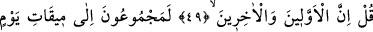
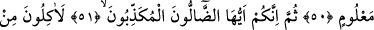
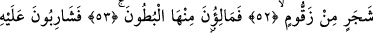
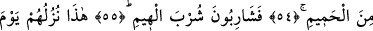
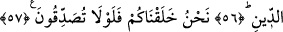
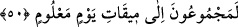
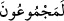

CEZÂ GÜNÜNDE
SUNULACAK ZİYAFET
49. De ki: Hem öncekiler hem de sonrakiler,
50. Belli bir günün belli vaktinde mutlaka toplanacaklardır!
51. Sonra siz ey sapıklar, yalancılar!
52. Elbette bir ağaçtan, zakkum ağacından yiyeceksiniz.
53. Karınlarınızı ondan dolduracaksınız.
54. Üstüne de kaynar sudan içeceksiniz.
55. Susamış develerin suya saldırışı gibi içeceksiniz.
56. İşte cezâ gününde onlara sunulacak ziyafet budur!
57. Sizi biz yarattık. Tasdik etmeniz gerekmez mi?
“De ki:” Hakkı gerçekleştirmek ve onların inkârlarını reddetmek için hem öncekiler
hem de sonrakiler; sizin ve babalarınızın da içinde bulunduğu bütün ümmetler, sizden ve
babalarınızdan öncekiler, yine sizden başka olanların öncekileri…
Âyet metninde “öncekiler”in “sonrakiler”den öne alınmasındaki hikmet, hem onların
dünyada yaşamış oldukları sıraya uymak hem de inkârcıların babalarının dirilmesine
olan inkârlarının, kendilerinin dirilmesine olan inkârlarından daha şiddetli olduğunu
ortaya koymak ve böylece bahsi geçen inkârın reddini pekiştirmek içindir.
50. Belli bir günün belli vaktinde mutlaka toplanacaklardır!
Âyetteki __WORD__ (lemecmu’ûn) kelimesi, sanki sevk ve sürme mânâsını kapsadığı
için ilâ harfi ile geçişli hâle getirilmiştir. Bahsedilen gün, Allah nezdinde belirlenmiş,
bilinen ve dünya için sınırlanmış gündür ki, kıyâmet günüdür. Mîkat kelimesinin yevmin
mâlum’a izâfeti,